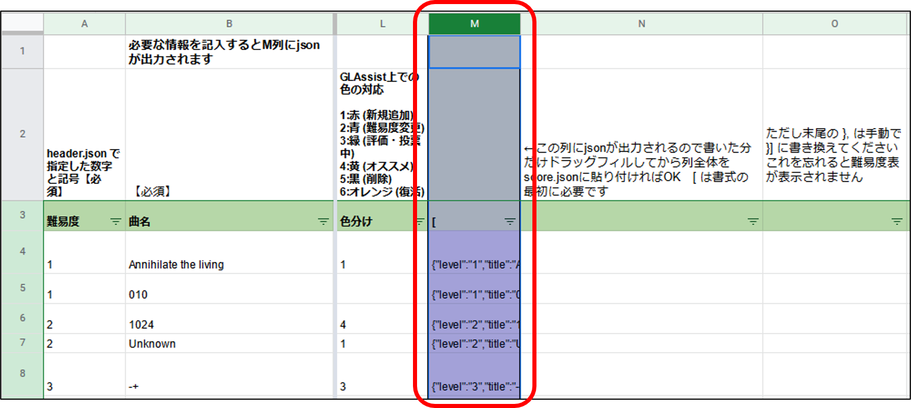
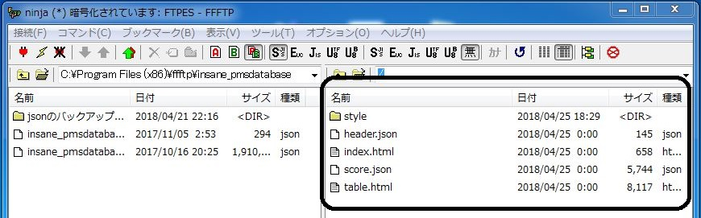

当サイト立ち上げの際に行った、新フォーマット(JSON)に対応したBMS難易度表の作成・公開方法をご紹介します。
こちらのコラムは執筆から時間が経過し、情報が古くなっています。良さげな重要な最新情報について以下にメモしておきますので、参考にしてください。
■ BMS難易度表の高速ホスティングテンプレート（Next.js + Vercel ISR）
(2024/04) 筆者の知る限り最新の難易度表作成用テンプレートです。ホームページの作成マニュアル、スプレッドシートでの表管理、データ取得の高速化など、当コラムの上位互換というような設計ですので、これから難易度表を作成する方はまずこちらを試されてみてはいかがでしょうか。
-----
以下は、当コラムを利用して既に難易度表を作成された方向けのオススメのアップデート情報です。(基本的に上述のホスティングテンプレートはこれらも包括しています)
■ GASを使用した難易度表の更新方法について
スプレッドシートを使った難易度表の管理 | Hex bms にて、曲データをシートに記入すると Google Apps Script (GAS) によって難易度表に自動同期してくれる手法が紹介されています。
当サイト (3) score.json の編集 で使っている手動更新より高効率でオススメです。
■ 難易度表の設置先サーバーについて
(5) ホームページの立ち上げ先は GitHub Pages が主流になりつつあります。FTP要らず、ブラウザから更新可能で、無料で使用できます。
初回公開には少し時間がかかります。ずっと 404 を返される場合、readme.md を作成すると改善されるかもしれません。
また、GitHub はアンダースコア「_」で始まるファイルやフォルダを公開対象から外す仕様があるようです。もし使用したい場合は、ルートディレクトリに拡張子 .nojekyll の空ファイルを設置してください。(参考資料)
(例) 可：score.json 不可：_score.json
当サイトの手法で作成した難易度表から GitHub やスプレッドシート(+GAS) を利用した更新に乗り換える場合、
「header.json」「score.json」の指定先URLを置換すれば、難易度表のURLを変更する必要はありません。(この時、URLはフルパス https://～ で指定してください)
(2026/06) LR2IR の閉鎖に伴い、難易度表とスプレッドシート内のLR2IRリンクを LR2IR Archive (魚拓サイト) に差し替えました。
既に当コラムの雛形を導入済の方は、「table.html」内の曲タイトル部 (=LR2IRリンク表示部) を次のように書き換えてください。
... ＜a href='http://www.dream-pro.info/~lavalse/LR2IR/search.cgi?mode=ranking&bmsmd5=" + info[i].md5 + "' target='_blank'>" + info[i].title + "").appendTo(str); ...
... ＜a href='https://lr2ir.com/charts/" + info[i].md5 + "' target='_blank'>" + info[i].title + "").appendTo(str); ...
なお、他にも
・https://lr2db.congenial-spirits.com/
・https://stellabms.xyz/lr2ir-archive (Stella にミラーリングされた LR2IR Archive)
・https://bms-ir.org/ (BMS-IR / β版代替IR)
など注目すべき代替データベースが他にいくつか出てきている状況ですので、難易度表の実態に即したものに差し替えてください。
(2024/04) 譜面画像リンクを 黒皇帝さんの BMS Score Viewer に差し替えました。
既に当コラムの雛形を導入済の方は、再ダウンロード または「table.html」内の譜面画像記述部を次のように書き換えてください。
... ＜a href='http://www.ribbit.xyz/bms/score/view?p=1&md5=" + info[i].md5 + "' target='_blank'＞♪＜/a＞ ...
... ＜a href='https://bms-score-viewer.pages.dev/view?md5=" + info[i].md5 + "' target='_blank'＞♪＜/a＞ ...
(2023/04) Mocha-Repository / MinIR へのリンクを追加しました。Khibine さんのご厚意でロゴを提供頂きました。(二次利用、再配布可 単体ダウンロードは こちら)
(2022/04) sha256 カラムを追加しました。既に当コラムの雛形を導入済の方は 必要に応じて再ダウンロードし、「table.html」をコピペ等で書き替えてください。
専門的な知識の無い方や、とりあえず難易度表を作成したい方向けの説明となります。(専門的な説明は筆者自身もできません)
サンプル難易度表 by schlucht2 および 第2通常難易度表のサンプル を参考にさせていただきました。一部の解説が重複することをご了承ください。
■ 【Download】PDB式サンプル難易度表セット (table_sample.zip)
■ 上記のサンプルを反映したホームページ (index.html)
また、JSONファイルの中身の作成方法の一例として、PDB式難易度表作成例 作業用 Google スプレッドシート を使用しています。
こちらのシートに関しては下記(3)で改めて紹介します。
まず、難易度表を表示するホームページの体裁を整えましょう。
上記のzipファイルを展開すると「index.html」「table.html」というファイルが入っています。
「index.html」はTOPページにあたります。ファイル名は変更しないでください。
「table.html」は GLAssist / BeMusicSeeker / beatoraja で読み込ませる難易度表のページです。このファイル名を変更する場合は難易度表の公開までに行いましょう。
公開後にファイル名を変更すると難易度表のURLが変更されることになり、既に導入済のユーザーにとって読み込みエラーの原因になってしまいます。
次にそれぞれのhtmlファイルをメモ帳などで開いて、説明文の追加等を行ってください。(HTMLの詳しい書き方については割愛します)
「table.html」のファイル名を変更した場合は、「index.html」内のリンク ＜a href="table.html"＞難易度表はこちら＜/a＞ の部分も更新してください。
以降、ファイル名を書き換えた場合やディレクトリを移動させた場合はその都度対応するリンクを書き換えてください。
難易度表全般のプロパティが格納されているのが「header.json」ファイルです。
メモ帳で「header.json」を開き、次の項目を更新してください。(これらの項目ははじめにきっちり決めておくべきですが、公開後に変更しても大丈夫です)
■ "name" : "難易度表の名前を記入"
■ "symbol" : "シンボルを記入" *★とか◆とかのアレ。難易度表データベースへの登録を考えている場合は、なるべく他の表とシンボルが重ならないようにした方が良い。
■ "data_url" : "score.jsonのあるURL" *特に知識がなければ、初期状態の ./score.json のままで編集不要 *次項 (3) でスプレッドシートを使った難易度表の管理 | Hex bms を利用する場合は、作成したウェブアプリケーションの URLを "" 内に貼り付けてください。
■ "level_order" : [難易度を記入] *カッコ内に使用する難易度をカンマ区切りで全て記入。数字以外は""で囲む。
難易度表に登録する譜面の情報が格納されているのが「score.json」ファイルです。
この中身を記述する方法は複数ありますが、ここではPMSデータベースで利用している Google スプレッドシートを利用した方法をご紹介します。
スプレッドシートを使った難易度表の管理 | Hex bms を利用する場合は、この解説は飛ばして (4) に進んでください。
■ PDB式難易度表作成例 作業用 Google スプレッドシート
上記 Google スプレッドシートの「シート例」を開いてください。ここに楽曲情報を入力すると、M列にコードが表示されます。これがJSONファイルの中身になります。
初期状態で「score.json」の中身はこのコードを列全体コピペし、末尾の }, を }] に変更したものです。
「シート例」と「score.json」の中身を照らし合わせて確認してください。

恐らくここで説明するよりも実際に書き込んで色々試されたほうが理解しやすいと思います。「シート雛形」をコピーしてご自由にお試しください。
難易度表作成の上で最低限必要なものは以下のとおりです。
■ 難易度 … 「header.json」で指定した数字と記号に対応させる。記号の半角/全角入力ミスが起こりやすいので注意。
■ 曲名
■ md5 (or LR2IR) …譜面の識別番号のようなもので、複数の取得方法があります。一例として、beatoraja の選曲画面で Ctrl + F3 でコピーされる 32 桁の文字列(md5) を記入
■ sha256 (or Mocha-Repository) … BMSONファイルを登録する場合のみ必須です。beatoraja の選曲画面 Ctrl + Shift + F3 でコピーされる 64 桁の文字列(sha256) を記入
----------
ミス防止のため、md5 または sha256 を入力しないとM列は空欄となる仕様です。M列の出力数が足りなければドラッグフィルで増やせます。
セル内改行と切り取りはエラーが起こるので使わないでください。また、末尾の }, を }] に書き換えるところだけは手動で、忘れずに行ってください。
編集が終わったらM列を手元の「score.json」に上書きコピペしましょう。
(*難易度表を表示して内容をチェック出来るのは 下記(5) 工程を行ってからになります。)
このフォルダの中身で難易度表のレイアウトを指定しています。
第2通常難易度表様で配布されているものとほぼ同一です。特に知識がなければ触る必要はありません。
大抵のレンタルサーバーで難易度表の開設は可能ですが、このコラムではPMSデータベースがお世話になっている忍者ホームページに登録します(ダイマ)
ドメイン名は難易度表のURLの一部になるので考えて決めましょう。登録が終わるとホームページの管理ページが開きます。
次に 忍者ホームページのFTP設定マニュアルを読んで FFFTP をインストールし、管理ページ内にあるFTP設定を入力して接続します。
接続できたら、FFFTPの画面右側に編集してきた「index.html」「table.html」「header.json」「score.json」「style(フォルダ)」をD＆Dで投入します。

これで難易度表が公開されているはずです。管理ページの右上「サイトを開く」を押すと「index.html」が開きます。難易度表ツールにURLを読み込ませて表示されるか確認しましょう。
なお、初期設定のまま公開した場合、URLは以下のようになっています。
■ TOPページ … http://(設定したドメイン名)
■ 難易度表 … http://(設定したドメイン名)/table.html *難易度表ツールに読み込ませるURLです
■ JSON … http://(設定したドメイン名)/header.json および /score.json
手順 (3) score.json を当コラムの紹介しているスプレッドシートの手法で作成した場合、難易度表を更新する都度 スプレッドシートで「score.json」の情報を作成・コピペし、手順 (5) FFFTPを使って最新の情報に上書きします。コードの不備で表示エラーが起こりがちなので、慣れないうちは バックアップを作成してから更新することをオススメします。
難易度表の公開後は、DARKSABUN さんの難易度表まとめ に登録してもらうと良いかもしれません。
PMS難易度表の場合 Links の難易度表にも掲載しますのでご連絡ください。
更に細かい情報に関しては コラム -難易度表の作成方法について (Tips/ Q&A/ カスタマイズ編)- をご確認ください。
その他、分からない事があれば直接ご連絡いただければと思います。